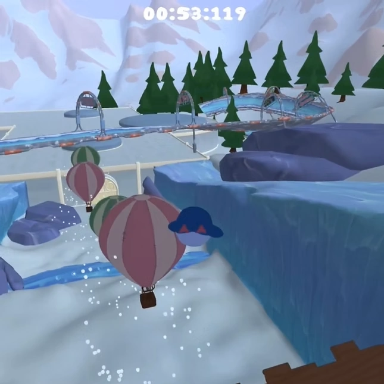

Slip Up N Slide
Slip-Up N Slide is a chaotic split-screen multiplayer racing game about finding your own path down a slippery track with chaotic physics and interactive hazards.
Made in PlaygroundSquad's in-house C++ engine.
This is the first game I ever made!
We implemented Jolt Physics for this game, which totally rules!
Genre: Racing
Engine: TenGine
Team Size: 12
Platform: PC & PS5
Time: 6 weeks
For this project, the biggest task I had was to implement local split-screen multiplayer.
This task involved setting up multiple cameras dynamically depending on the amount of connected controllers, the function for which handles different pre-determined configurations of viewport sizes and placements. The system seamlessly handled between one and four users and didn't require any user input at all.
Something which was difficult at first was rewriting our singleplayer logic into something which worked for different amounts of players. I solved this while keeping our project structure the same by converting all of the player-related variables into arrays which were indexed with the controller ID. The solution felt very seamless and let the other programmers on the team keep working as usual without having to pay attention to any new systems or big changes to the code.
Spawning the players when loading into the level was done in a similar fashion, where the controller ID would determine which "PlayerStart" object to spawn the player at. This allowed designers to simply tag an empty object in Tensor with the PlayerStart tag. (Tensor is the editor for TenGine!)
In Slip Up N Slide we wanted the world to be interactive and give life to otherwise mundane parts of the world by making them affect how you play.
To do this, I made the penguin character bounce when it hit balloons, allowing you to shortcut the route! I also made snow piles slow the penguin down and I added speed boosters that would cause the penguin to go faaast!
Since the game uses the Jolt Physics engine, all of these power-ups simply affect the velocity of the player in different ways, the hardest part was actually the collision detection- something which had to be implemented using Jolt.

Note: this is all protected by an NDA so I will be brief.
A cool-factor that we wanted for the game was proper utilization of the DualSense controllers for the PlayStation 5. I gladly took it upon myself to create a kick-ass class that handled all controller features we needed and more-
As controller input is implemented in TenGine, I did not work on that part. I did however implement rumble, lightbar color support, gyro support and a huge range of different adaptive trigger modes.
The gyro didn't end up being used but the rest was. For example, rumble was triggered when crashing into snowpiles and was also paired with an adaptive trigger mode that would vibrate the triggers on the controller, causing the crashes to feel impactful! :>
I tried to implement a ragdoll system that would be used during hard crashes but did not manage to get the joints of the model to update properly so it unfortunately got dropped. The ragdolling worked by iterating over the penguin's joints and building Jolt Physics bodies with constraints between them and simulating the physics bodies. The plan was to use the physics body position and update the penguin's joints' positions to match them. This didn't work with how the engine handled parent-child transforms. I decided to therefore scrap the feature as we didn't have the time needed to get the feature across the finish line.